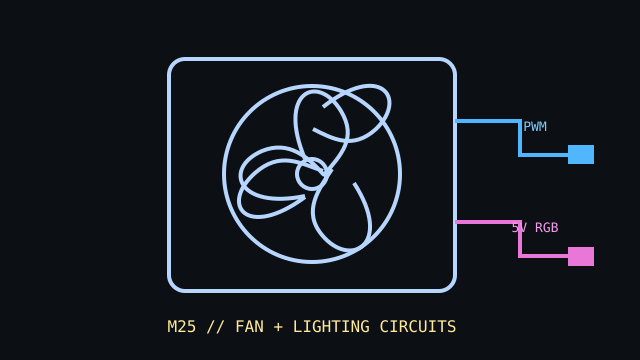

[ IDENTIFIED SKU // PH-F120M25_DRGB_PWM_BK01 ]
Phanteks M25-120 D-RGB PWM
Black 120 mm D-RGB PWM single-fan SKU with separate fan-power/control and lighting connections. Do not treat the lighting plug as the fan power connector.

Exact identity: black M25-120 D-RGB PWM single fan, PH-F120M25_DRGB_PWM_BK01. White color, multi-packs, and Gen2 fans use distinct suffixes or SKUs.
Specifications
| Frame | 120 × 120 × 25 mm |
|---|---|
| Speed / airflow / pressure / noise | 500–2000 RPM; maximum airflow 84.26 CFM; maximum static pressure 2.67 mm H₂O; 35.7 dB(A) maximum noise. |
| Bearing | Hydraulic bearing |
| Connector / control | 4-pin PWM fan connector plus separate 3-pin 5 V D-RGB connector. Do not connect 3-pin 5 V lighting to a 12 V RGB header. |
| Electrical | Fan rated 12 V DC, maximum fan current 0.20 A. Lighting current is separately specified as 0.25 A ±0.04 A; include both loads when checking controller budgets. |
| Fit and host compatibility | Standard 120 mm, 25 mm-depth mount. Confirm radiator/case clearance and screw depth; lighting requires a compatible 5 V addressable RGB controller/header, while fan speed requires PWM support. |
Installation
Connect the PWM lead to a suitable 4-pin fan header/controller and the D-RGB lead only to the matching 5 V addressable lighting interface. Check the current limits of both controllers independently.
Manufacturer sources
- Phanteks — M25-120 D-RGB product pageManufacturer product family, mounting use, and lighting/control overview.
- Phanteks — M25-120 D-RGB model specificationsManufacturer specifications and product variants for PH-F120M25 D-RGB.